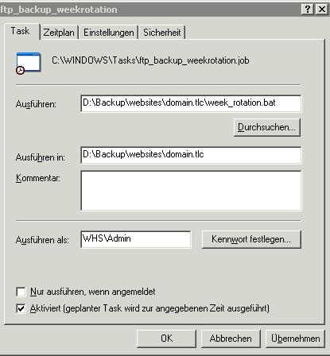
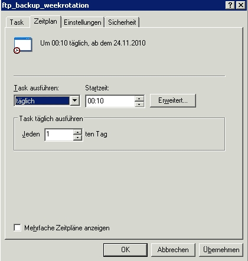
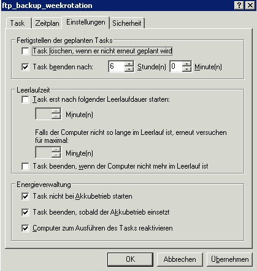

Dieser Artikel beschreibt eine Möglichkeit, alle Dateien im Webspace (der auf der eigenen Domain gehosteten Wordpress-Website) mit Dateiattributen und Ordnerrechten automatisch zu sichern. Ziel ist es, täglich eine automatische Sicherung über FTP durchzuführen. Eine Beschreibung der Datenbanksicherung über phpmyadmin wird in diesem Artikel noch nicht betrachtet.
Hierzu habe ich folgende Anforderungen an das Backup für meine private Website:
- Kommandozeilenbasiert, so dass ein Shell-Script zeitgesteuert (automatisch) über den Windows-Taskplaner aufgerufen werden kann
- Ausführung über den Windows Home Server (WHS) möglich, da dieser durchgängig läuft
- Traffic schonend, d.h. inkrementielles Backup, so dass nur geänderte Dateien heruntergeladen werden
- sFTP wäre schön, ist für meine private Seite aber nicht zwingend erforderlich
- Ein Backup für die letzten sieben Tage (1/Tag) ist für mich ausreichend
Nach längerer Recherche habe ich mich für das freie GNU-Projekt Wget entschieden, welches hier als 32bit-Windows-Version erhältlich ist. Leider unterstützt Wget nicht sFTP, was in meinem Fall jedoch kein Problem darstellt. Weiterhin benötige ich zur zuverlässigen Ermittlung des Wochentags noch das Kommandozeilentool robocopy, welches in Windows Vista, Windows 7 und Windows Server 2008 standardmäßig integriert ist. Da der Windows Home Server (erste Version) auf Windows Server 2003-SP3 basiert, muss man hier noch die Microsoft Resource Kit Tools auf dem WHS nachinstallieren.
Nun ist alles vorbereitet, um das Backup in einem Batch-Script zu implementieren, so dass dieses später nur noch über den Taskplaner automatisch aufgerufen werden muss. Hierzu erstellt man sich zunächst auf dem WHS einen Ordner Backup/websites/domain.tld. Mit domain.tld ist der Name der zu sichernden Website gemeint, z.b. home-server-mind.com. In diesem Verzeichnis werden nun die Unterordner Montag, Dienstag,…,Sonntag erstellt.
Im Ordner Backup/websites/domain.tld erstellt man nun mittels Windows-Editor oder noch schöner mit Notepad++ eine Textdatei, kopiert nachfolgenden Code hinein und speichert diese Datei als week_rotation.bat.
1 2 3 4 5 6 7 8 9 10 11 12 13 14 15 16 17 18 19 20 21 | |
Im Code muss nun in Zeile 5 der Ausdruck user:password durch die persönlichen FTP-Login-Daten ersetzt werden sowie in den Zeilen 5, 20 und 21 der Ausdruck domain.tld durch den Namen der eigenen Website (ohne http://www).
Zu guter letzt muss die Datei week_rotation.bat in den Taskplaner eingebunden werden. Dazu verbindet man sich zunächst mit dem WHS per Remotedesktopverbindung (nicht über die Windows Home Server-Konsole) und öffnet über START > SYSTEMSTEUERUNG > GEPLANTE TASKS den Geplanten Task hinzufügen-Dialog. Hier nimmt man gemäß nachfolgender Bilder in den ersten drei Reitern die abgebildeten Einstellungen vor:
Unter TASK > AUSFÜHREN wählt man die soeben erstellte Datei week_rotation.bat, unter TASK > AUSFÜHREN IN wählt man den gleichen Ordner und unter TASK > AUSFÜHREN ALS sollte ein lokaler Administrator gewählt werden:

Im Reiter Zeitplan habe ich die tägliche Ausführung um 00:10 Uhr gewählt, da mein Internet-Provider ggf. um 00:00 Uhr täglich eine kurze Zwangstrennung durchführt. Die Uhrzeit sollte also sinnvoll gewählt werden:

Im Reiter Einstellungen lasse ich den Task nach sechs Stunden beenden, falls er sich aufgehangen hat und setze mindestens ein Häckchen bei Computer zum Ausführen reaktivieren:

Das war es schon. Zum Testen die Datei
week_rotation.batmanuell starten und überprüfen, ob es funktionert. Ggf. sollte man noch seine Firewall-Einstellungen betreffend Wget und den Ports 20 und 21 überprüfen.
Weiterführende Literatur: Wget FAQ, Manual | Robocopy Allgemein, FAQ | Batch-Programmierung Allgemein, Beispiele | Cron-Jobs unter Windows Allgemein | Misc Backup-Rotations-Schemata